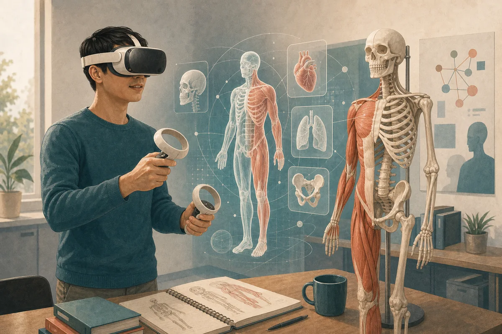
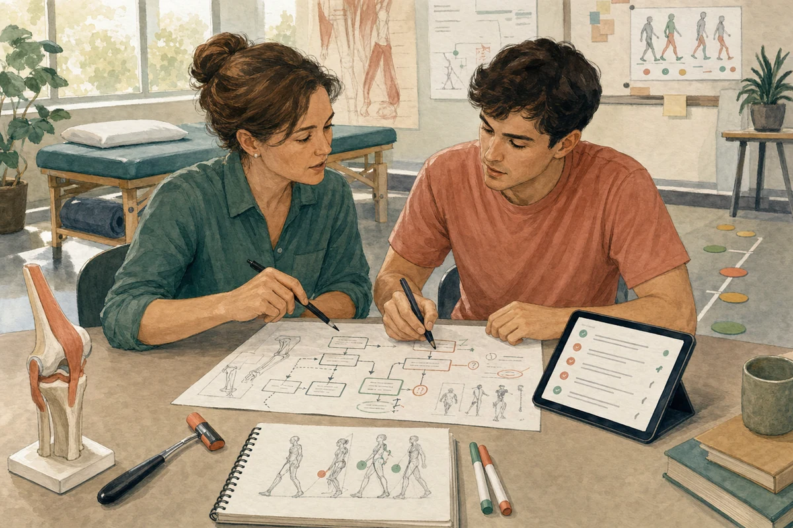
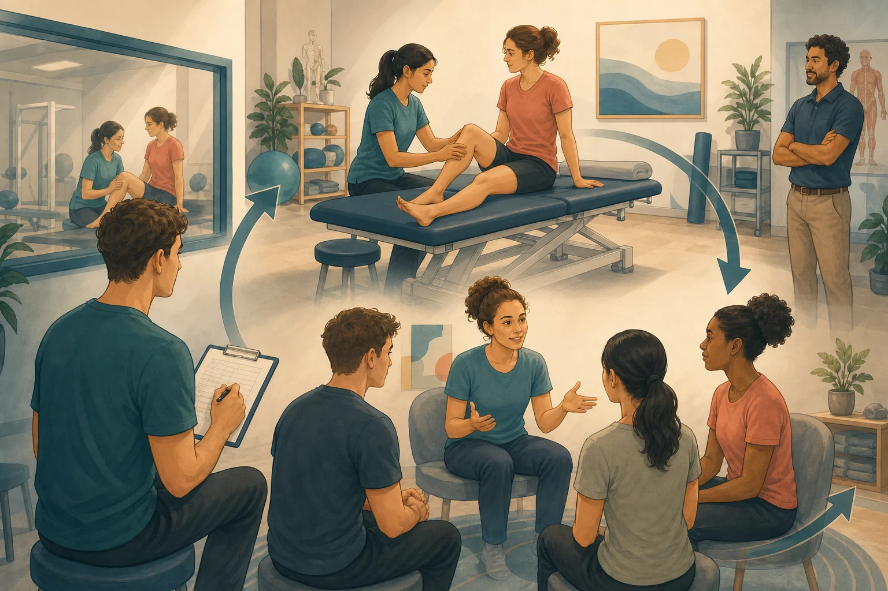

公开学术实验室
庾德荣
物理治疗高级讲师
物理治疗师 · 教育工作者 · 研究人员 · 学习设计者
通过人工智能、虚拟现实与模拟教学，设计更有效的临床推理学习方式。
我探索新兴技术如何支持健康专业教育中的批判思考、体验式学习与实践准备，同时不取代临床照护核心的人类判断。
我的工作从教育问题出发，再探讨技术能否让思考更可见、练习更有意义，或反馈更具价值。
立足实务
目前工作
我正在探索、建立、测试与学习的事情
目前影响我教学与研究的问题。
探索学术实验室
选择一个你想追踪的问题
选择一项主题，了解科技背后真正要处理的教育问题。
精选工作
学术实验室的实践证据
精选项目呈现教育问题、设计回应、我的角色及目前状态，并避免夸大现有证据。

虚拟现实针灸学习
- 问题
- 学生需要反复连接解剖、穴位定位、安全与程序推理，但受时间、场地及督导所限，练习机会有限。
- 方法
- 建立配合课程的虚拟现实应用程序，设有训练、练习及评估模式，并加入使用前准备与使用后解说。
- 我的角色
- 教育设计者及讲师，支持项目发展与课程整合。
- 状态
- 当前项目：正在发展及整合至课程。
健康专业人工智能素养
- 问题
- 使用聊天机器人并不等于理解幻觉、偏见、隐私、核实及专业问责。
- 方法
- 发展课程设计提示、反思文章及简短互动知识检查，让负责任使用的决定变得具体。
- 我的角色
- 讲师及教育设计者，发展实用人工智能素养活动。
- 状态
- 当前教学资源及课程发展主题。

临床推理聊天机器人
- 问题
- 人工智能可在学生辨认红旗、比较假设或解释计划前，产生看似合理的临床答案。
- 方法
- 发展优先处理安全筛查、分阶段提问、解释及反思的试点聊天机器人，其后才显示建议。
- 我的角色
- 研究人员及教育设计者，带领试点概念与学习设计。
- 状态
- 试点研究发展中；目前并未宣称具成效。

健康专业模拟教育
- 问题
- 模拟学习往往主要从担任临床人员的学生角度讨论；学生作为同伴病人、观察者或同伴反思引导者时可能学到什么，当前仍缺乏充分理解。
- 方法
- 采用临床学习者、同伴病人、观察者与同伴反思引导者的结构化角色轮换，并提供角色准备、聚焦观察、引导反思，以及教师对临床准确性和心理安全的监督。
- 我的角色
- 研究人员及讲师，参与角色轮换设计与持续分析。
- 状态
- 分析与论文撰写进行中；角色轮换对临床能力与准备度的影响尚未确立。
亲身体验
不只阅读，更能从实践中学习
透过短篇互动活动，探索临床推理、人工智能、虚拟现实与模拟教学。
精选里程碑
以工作为本的认可
简要记录本网站已载述的教学、学术与教育发展工作。
设计背后
最新文章
教育创新背后的决定、张力、限制与偶尔失败的近期反思。
合作
与我合作
我欢迎在健康专业教育的研究、教学创新、课程发展与教育科技方面进行合作。
- 人工智能辅助临床推理
- 虚拟现实课程整合
- 模拟为本教育
- 物理治疗教学创新
- 设计为本教育研究
- 获邀演讲与工作坊